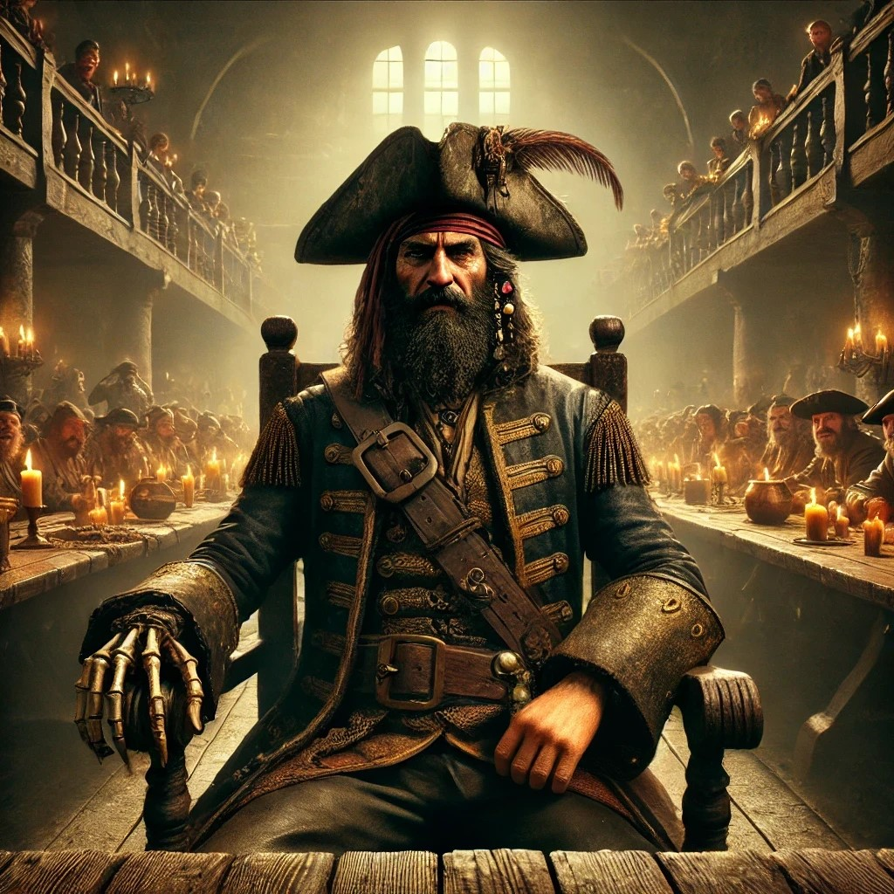

Tales From the High Sea!
Book 3: Tempest Rising
Testing the Worth of the Scourge’s Bane
July 13, 2024
The crew of the Scourge’s Bane set sail for Port Peril with a singular purpose: to petition the Hurricane King, Kerdak Bonefist, for a letter of marque. This coveted document would officially recognize them as pirates of the Shackles, granting them legitimacy and marking their rise in power. Arriving in the chaotic and bustling port, the crew knew that gaining an audience with the Hurricane King would not be easy. They managed to secure an "appointment" through a combination of charm, reputation, and a hefty bribe. With their audience scheduled for the following morning, the crew prepared for whatever challenges lay ahead.
As the sun rose over Port Peril, the Hurricane King’s first mate, Tsadok Goldtooth, appeared at the docks, his arrival drawing a crowd eager to witness the proceedings. With a glint of amusement in his eye, Tsadok announced that the crew would have to prove their worth through a series of challenges. "Let’s see if these play pirates are worthy of becoming captains themselves," he jeered, his words a thinly veiled insult. The crowd murmured in anticipation as the first challenge was revealed: a race to the top of a ship’s foremast.
One of the heroes would race against a member of Tsadok’s crew to see who could unfurl their sail first. The rules forbade certain magics, but Kasmira, ever clever and quick, donned slippers of spider climbing—an enchantment that was not specifically prohibited. As the race began, she shot up the rigging with ease, her movements swift and calculated. Remembering to work smart, she moved from side to side, untying the knots evenly to prevent the wind from catching one side and making the other more difficult. Her strategy paid off as she quickly gained the lead.
As the race unfolded, Finn and Varen noticed a suspicious figure among the spectators. The man was fiddling with a line securing the forestay boom, clearly intending to sabotage Kasmira’s climb by releasing the boom to swing dangerously into the mast. Without moving a muscle, Finn used his telekinetic powers to hold the boom steady, ensuring that Kasmira’s ascent was uninterrupted. With no interference, Kasmira reached the top first and unfurled the sail, securing victory for the first challenge.
Next came a "friendly" game of cards against Tsadok himself, a test of wit and deception. Varen, confident in his perceptive skills, took on the challenge, sitting across from Tsadok for a round of "Bastard’s Fool." As the game progressed, Varen watched Tsadok closely, countering every attempt at cheating with his own subtle bluffs and sleight of hand. With a final flourish, Varen laid down his winning hand, taking the full purse and winning the second challenge. The crowd erupted in cheers, impressed by the crew's cunning.
The third and final challenge was far more dangerous than the first two: a test of combat prowess. Three giant cages were wheeled to the pier, each containing a marsh giant—a monstrous creature of formidable strength. The crew was tasked with defending their ship from the giants’ assault, a real fight that could not be taken lightly. The crowd, sensing the impending chaos, backed away as the cages were opened, and the giants lumbered out, immediately hurling boulders toward the crew. One giant conjured a thick fog that enveloped Red and Kasmira, obscuring their vision and complicating their defense.
From his perch in the crow’s nest, Varen began firing his musket at the spell-casting giant, each shot ringing out above the din. Kasmira, using her shadow step ability, teleported directly to the giants, her pistol blazing as she fired into their ranks. Finn coordinated the crew to fire the ship’s ballista, sending massive bolts into the fray. Red charged forward, his axe glinting in the sunlight as he met the giants in brutal melee combat. The battle was fierce, with boulders crashing and the giants’ roars echoing across the harbor. One by one, the giants fell—first to Varen’s musket, then to Kasmira’s pistol, and finally to Red’s mighty axe, each strike a testament to their skill and bravery.
With all three challenges completed, Tsadok stepped forward, a grudging respect in his eyes. "You lot have proven yourselves to be good sorts," he declared, turning to address the crowd. "They are indeed worthy of being pirates of the Shackles!" The onlookers erupted in applause, cheering the crew’s victory. Tsadok announced that the Hurricane King himself would bestow the letter of marque at a feast that very night. The crew of the Scourge’s Bane had proven their mettle, their path to becoming recognized pirates of the Shackles now firmly in sight. As they prepared for the evening’s festivities, the promise of new adventures and greater glory beckoned, their names soon to be etched among the legends of the high seas.
A Night with the Hurricane King
Continuation of July 13, 2024

That evening, the crew of the Scourge’s Bane found themselves at the heart of a grand celebration, invited to the feast hosted by none other than the Hurricane King himself, Kerdak Bonefist. The hall was alive with the sounds of laughter, clinking mugs, and raucous shanties as pirates of all stripes reveled in the night's festivities. Bonefist, already deep into his cups, sat on his throne, his eyes bleary but sharp. It took him several attempts to quiet the rowdy crowd, finally resorting to firing his pistol into the air. The loud bang echoed through the room, silencing the gathered pirates. "This fresh catch of scallywags wants to add their fine ship to our brethren o’ the sea," Bonefist slurred, waving his still-smoking pistol toward the crew. "But before I award their letter of marque and make them Free Captains right and true, I say we hear from them." His gaze turned to the crew. "What say you tell us all a tale or two of how you came by the plunder in your hold?"
Taking a confident step forward, Kasmira began to spin a tale of the Scourge’s Bane and their daring exploits on the high seas. Her voice carried through the hall, weaving a story of adventure and danger. But just as the crowd was beginning to get drawn into her narrative, heckling erupted from a few unruly listeners. The jibes threatened to derail the entire effort. Kasmira remained calm, addressing the hecklers directly and firmly, but it was Finn's stealthy approach that truly quieted them. Moving unseen among the crowd, he leaned in close to each heckler, whispering threats that chilled them to their core. Realizing their lives might be on the line, the hecklers quickly fell silent.
With the interruptions quelled, Kasmira continued her tale, captivating the audience with her recounting of their battles and victories. The pirates in attendance hung on her every word, swept up in the excitement of her story. As she finished, Bonefist stood and called for a show of approval. The hall erupted in a hearty "Aye!" from the vast majority of the crowd. Satisfied, Bonefist presented Kasmira with an official Shackles letter of marque, declaring her and her crew true Free Captains of the Shackles. The room burst into cheers, and the feast continued with renewed vigor.
With their status now official, the party truly began in earnest. The crew mingled with other pirates, sharing stories and reveling in their newfound recognition. Kasmira spent much of the evening near Bonefist, carefully observing the man behind the legend. Rumors swirled throughout the room—talk of the upcoming Captain’s Regatta was on everyone's lips, as was speculation about Tessa Fairwind's growing influence and her potential challenge to Bonefist’s rule. Whenever the Hurricane King was out of earshot, whispers of plots and intrigue filled the air. Kasmira listened closely as Bonefist himself muttered about conspiracies and threats to his position, revealing a paranoid edge to the feared pirate king.
The next day, eager to capitalize on their momentum, the crew set out to meet with Tessa Fairwind, who they had heard was currently at her townhouse in Port Peril. As they made their way through the bustling streets, they spotted a familiar face. Caulky Taroon, the former cabin girl from the Wormwood, slipped into a nearby tavern just as the crew approached. Sensing an opportunity, they followed her inside and took a seat at a table near the door, curious to see what she was up to.
Almost immediately, they were approached by Pierce Jerrell, a fellow Shackles captain, who sat down at their table, ordering drinks and striking up a conversation. The crew accepted his hospitality but kept their eyes on Caulky, noticing her furtive movements as she slipped something into the drinks of unsuspecting patrons. It seemed that the Wormwood was once again recruiting in their usual underhanded fashion. Suddenly, one of the patrons noticed something was amiss with his drink. His face twisted in anger, he demanded to know who had tried to poison him. In a fit of rage, he hurled his drink across the bar, splashing others with the tainted liquid and striking another customer with the cup. The tavern erupted into chaos as a full-blown brawl broke out.
Determined to keep an eye on Caulky, the officers of the Scourge’s Bane tried to avoid getting caught up in the melee. Varen, thinking quickly, cast a massive web across the center of the tavern, hoping to slow down the frenzied brawlers. As Varen backed against the front wall, Finn took advantage of the distraction, turning invisible and flying to the open walkway on the second floor, ready to intercept Caulky as she fled up the stairs. Kasmira used her shadow step ability to position herself behind Caulky, anticipating her path. Red, meanwhile, did his best to push through the crowd toward the back of the tavern but was quickly caught in the thick of the fight. Brawlers lunged at both Varen and Red, forcing Varen to fire his musket in frustration. The shot echoed loudly, and taking it as a cue, Red drew his axe and began swinging. The sudden violence changed the mood of the tavern, and the brawl turned deadly.
Seeing the escalation, Varen took a commanding stance, shouting for everyone to stand down or face the consequences. Simultaneously, Red cast a blinding light above his head, his booming voice adding weight to the demand for order. The combined threat of violence and magic caused the crowd to pause, uncertainty written on their faces. At that moment, Finn, still invisible, caught up with Caulky and knocked her unconscious with a swift, calculated strike. Kasmira stepped forward, quickly shackling Caulky with magical restraints to ensure she wouldn’t escape. Finn, now visible again, decided to make a show of force, gathering his magical energy into a visible display and releasing it with a deafening thunderclap.
The tavern-goers, now thoroughly stunned and intimidated, stood frozen as Finn descended the stairs. He calmly placed a pouch of 100 gold pieces on the bar and declared, "A round for everyone!" before turning to leave. The rest of the crew followed him out, the brawl having deflated completely in the wake of their display. With Caulky in tow, they returned to the Scourge’s Bane, ready to question her when she awoke. The events of the day had only strengthened their resolve, and they were more determined than ever to carve their path in the pirate-infested waters of the Shackles.